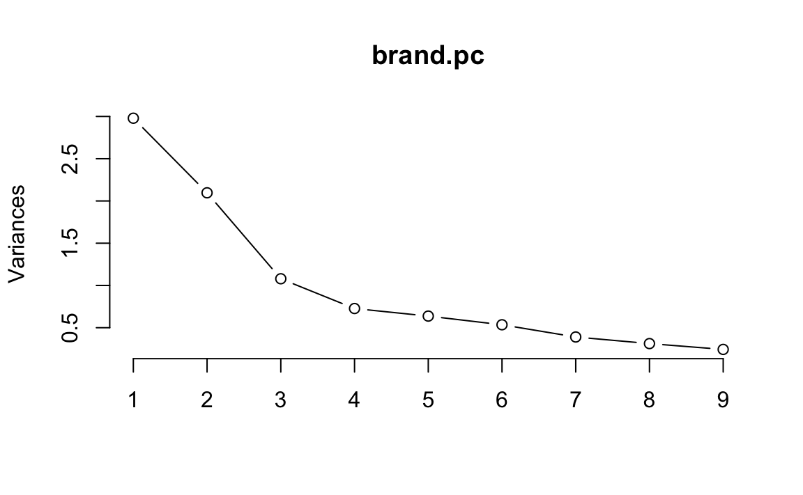
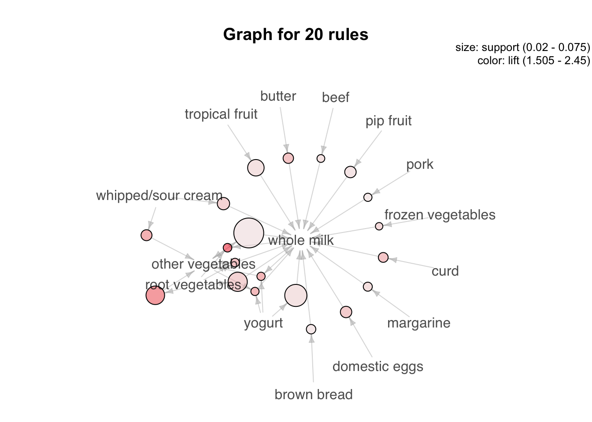

Kapitel 8 Ungeleitetes Modellieren
8.1 Clusteranalyse
Wir werden einen simulierten Datensatz aus Chapman & Feit (2015): R for Marketing Research and Analytics. Springer analysieren (http://r-marketing.r-forge.r-project.org). Näheres dazu siehe Kapitel 5 dort.
Sie können ihn von hier als csv-Datei herunterladen:
#download.file("https://goo.gl/eUm8PI", destfile = "segment.csv")Das Einlesen erfolgt, sofern die Daten im Arbeitsverzeichnis liegen, wieder über:
segment <- read.csv2("https://goo.gl/eUm8PI")Ein Überblick über die Daten:
str(segment)
#> 'data.frame': 300 obs. of 7 variables:
#> $ Alter : num 50.2 40.7 43 40.3 41.1 ...
#> $ Geschlecht : Factor w/ 2 levels "Frau","Mann": 2 2 1 2 1 2 1 2 1 1 ...
#> $ Einkommen : num 51356 64411 71615 42728 71641 ...
#> $ Kinder : int 0 3 2 1 4 2 5 1 1 0 ...
#> $ Eigenheim : Factor w/ 2 levels "Ja","Nein": 2 2 1 2 2 1 2 2 2 2 ...
#> $ Mitgliedschaft: Factor w/ 2 levels "Ja","Nein": 2 2 2 2 2 2 1 1 2 2 ...
#> $ Segment : Factor w/ 4 levels "Aufsteiger","Gemischte Vorstadt",..: 2 2 2 2 2 2 2 2 2 2 ...
head(segment)
#> Alter Geschlecht Einkommen Kinder Eigenheim Mitgliedschaft
#> 1 50.2 Mann 51356 0 Nein Nein
#> 2 40.7 Mann 64411 3 Nein Nein
#> 3 43.0 Frau 71615 2 Ja Nein
#> 4 40.3 Mann 42728 1 Nein Nein
#> 5 41.1 Frau 71641 4 Nein Nein
#> 6 40.2 Mann 60325 2 Ja Nein
#> Segment
#> 1 Gemischte Vorstadt
#> 2 Gemischte Vorstadt
#> 3 Gemischte Vorstadt
#> 4 Gemischte Vorstadt
#> 5 Gemischte Vorstadt
#> 6 Gemischte VorstadtZur Unterstützung der Analyse wird (wieder) mosaic und tidyverse verwendet:
library(tidyverse)
library(mosaic)Das Ziel einer Clusteranalyse ist es, Gruppen von Beobachtungen (d. h. Cluster) zu finden, die innerhalb der Cluster möglichst homogen, zwischen den Clustern möglichst heterogen sind. Um die Ähnlichkeit von Beobachtungen zu bestimmen, können verschiedene Distanzmaße herangezogen werden. Für metrische Merkmale wird z. B. häufig die euklidische Metrik verwendet, d. h., Ähnlichkeit und Distanz werden auf Basis des euklidischen Abstands bestimmt. Aber auch andere Abstände wie Manhatten oder Gower sind möglich. Letztere haben den Vorteil, dass sie nicht nur für metrische Daten sondern auch für gemischte Variablentypen verwendet werden können.
Auf Basis der drei metrischen Merkmale (d. h. Alter, Einkommen und Kinder) ergeben sich für die ersten sechs Beobachtungen folgende Abstände:
dist(head(segment))
#> 1 2 3 4 5
#> 2 19941.8
#> 3 30946.1 11004.3
#> 4 13179.5 33121.3 44125.6
#> 5 30985.9 11044.0 39.9 44165.3
#> 6 13700.4 6241.5 17245.8 26879.9 17285.5Sie können erkennen, dass die Beobachtungen 5 und 3 den kleinsten Abstand haben, während 5 und 4 den größten haben. Allerdings zeigen die Rohdaten auch, dass die euklidischen Abstände von der Skalierung der Variablen abhängen (Einkommen streut stärker als Kinder). Daher kann es evt. sinnvoll sein, die Variablen vor der Analyse zu standardisieren (z. B. über scale()). Die Funktion daisy() aus dem Paket cluster bietet hier nützliche Möglichkeiten.
library(cluster)
daisy(head(segment))
#> Dissimilarities :
#> 1 2 3 4 5
#> 2 0.307
#> 3 0.560 0.390
#> 4 0.219 0.184 0.502
#> 5 0.516 0.220 0.242 0.404
#> 6 0.401 0.206 0.239 0.268 0.426
#>
#> Metric : mixed ; Types = I, N, I, I, N, N, N
#> Number of objects : 68.1.1 Hierarchische Clusteranalyse
Bei hierarchischen Clusterverfahren werden Beobachtungen sukzessiv zusammengefasst (agglomerativ). Zunächst ist jede Beobachtung ein eigener Cluster, die dann je nach Ähnlichkeitsmaß zusammengefasst werden.
Fassen wir die Beobachtungen ohne die Segmentvariable Segment, Variable 7, zusammen:
seg.dist <- daisy(segment[,-7]) # Abstände
seg.hc <- hclust(seg.dist) # Hierarchische ClusterungDas Ergebnis lässt sich schön im Dendrogramm darstellen:
plot(seg.hc)
Je höher (Height) die Stelle ist, an der zwei Beobachtungen oder Cluster zusammengefasst werden, desto größer ist die Distanz. D. h., Beobachtungen bzw. Cluster, die unten zusammengefasst werden, sind sich ähnlich, die, die oben zusammengefasst werden unähnlich.
Hier wurde übrigens die Standardeinstellung für die Berechnung des Abstands von Clustern verwendet: Complete Linkage bedeutet, dass die Distanz zwischen zwei Clustern auf Basis des maximalen Abstands der Beobachtungen innerhalb des Clusters gebildet wird.
Es ist nicht immer einfach zu entscheiden, wie viele Cluster es gibt. In der Praxis und Literatur finden sich häufig Zahlen zwischen 3 und 10. Evt. gibt es im Dendrogramm eine Stelle, an der der Baum gut geteilt werden kann. In unserem Fall vielleicht bei einer Höhe von \(0.6\), da sich dann 3 Cluster ergeben:
plot(seg.hc)
rect.hclust(seg.hc, h=0.6, border="red")
Das Ergebnis, d. h. die Clusterzuordnung, kann durch den Befehl cutree() den Beobachtungen zugeordnet werden.
segment$hc.clust <- cutree(seg.hc, k=3)Z. B. haben wir folgende Anzahlen für Beobachtungen je Cluster:
mosaic::tally(~hc.clust, data=segment)
#> hc.clust
#> 1 2 3
#> 140 122 38Cluster 3 ist also mit Abstand der kleinste Cluster (mit 38 Beobachtungen).
Für den Mittelwert des Alters je Cluster gilt:
segment %>%
group_by(hc.clust) %>%
summarise(Alter_nach_Cluster = mean(Alter))
#> # A tibble: 3 × 2
#> hc.clust Alter_nach_Cluster
#> <int> <dbl>
#> 1 1 38.5
#> 2 2 46.4
#> 3 3 34.5D. h. die Durchschnittsalter ist in Cluster der Cluster unterscheiden sich.
Das spiegelt sich auch im Einkommen wieder:
segment %>%
group_by(hc.clust) %>%
summarise(Einkommen_nach_Cluster = mean(Einkommen))
#> # A tibble: 3 × 2
#> hc.clust Einkommen_nach_Cluster
#> <int> <dbl>
#> 1 1 49452
#> 2 2 54355
#> 3 3 44113Allerdings sind die Unterschiede in der Geschlechtsverteilung eher gering:
mosaic::tally(Geschlecht~hc.clust, data=segment, format="proportion")
#> hc.clust
#> Geschlecht 1 2 3
#> Frau 0.543 0.549 0.526
#> Mann 0.457 0.451 0.4748.1.2 k-Means Clusteranalyse
Beim k-Means Clusterverfahren handelt es sich im Gegensatz zur hierarchischen Clusteranalyse um ein partitionierendes Verfahren. Die Daten werde in k Cluster aufgeteilt – dabei muss die Anzahl der Cluster im vorhinein feststehen. Ziel ist es, dass die Quadratsumme der Abweichungen der Beobachtungen im Cluster zum Clusterzentrum minimiert wird.
Der Ablauf des Verfahrens ist wie folgt:
- Zufällige Beobachtungen als Clusterzentrum
- Zuordnung der Beobachtungen zum nächsten Clusterzentrum (Ähnlichkeit, z. B. über die euklidische Distanz)
- Neuberechnung der Clusterzentren als Mittelwert der dem Cluster zugeordneten Beobachtungen
Dabei werden die Schritte 2. und 3. solange wiederholt, bis sich keine Änderung der Zuordnung mehr ergibt – oder eine maximale Anzahl an Iterationen erreicht wurde.
Hinweis: Die (robuste) Funktion pam() aus dem Paket cluster kann auch mit allgemeinen Distanzen umgehen. Außerdem für gemischte Variablentypen gut geeignet: Das Paket clustMixType.
Zur Vorbereitung überführen wir die nominalen Merkmale in logische, d. h. binäre Merkmale, und löschen die Segmente sowie das Ergebnis der hierarchischen Clusteranalyse:
segment.num <- segment %>%
mutate(Frau = Geschlecht=="Frau") %>%
mutate(Eigenheim = Eigenheim=="Ja") %>%
mutate(Mitgliedschaft = Mitgliedschaft=="Ja") %>%
dplyr::select(-Geschlecht, -Segment, -hc.clust)Über die Funktion mutate() werden Variablen im Datensatz erzeugt oder verändert. Über select() werden einzene Variablen ausgewählt. Die “Pfeife” %>% übergeben das Ergebnis der vorherigen Funktion an die folgende.
Aufgrund von (1.) hängt das Ergebnis einer k-Means Clusteranalyse vom Zufall ab. Aus Gründen der Reproduzierbarkeit sollte daher der Zufallszahlengenerator gesetzt werden. Außerdem bietet es sich an verschiedene Startkonfigurationen zu versuchen. in der Funktion kmeans() erfolgt dies durch die Option nstart=. Hier mit k=4 Clustern:
set.seed(1896)
seg.k <- kmeans(segment.num, centers = 4, nstart = 10)
seg.k
#> K-means clustering with 4 clusters of sizes 111, 26, 58, 105
#>
#> Cluster means:
#> Alter Einkommen Kinder Eigenheim Mitgliedschaft Frau
#> 1 42.9 46049 1.649 0.505 0.1081 0.568
#> 2 56.4 85973 0.385 0.538 0.0385 0.538
#> 3 27.0 22608 1.224 0.276 0.2069 0.414
#> 4 43.6 62600 1.505 0.457 0.1238 0.590
#>
#> Clustering vector:
#> [1] 1 4 4 1 4 4 4 1 2 4 1 1 4 4 1 1 1 1 1 4 4 4 1 4 1 1 1 1 4 1 4 4 1 1 2
#> [36] 1 4 1 1 4 4 4 1 4 4 4 4 1 1 1 1 1 2 1 1 4 4 4 4 1 4 1 4 1 1 1 1 4 4 4
#> [71] 4 1 1 4 1 1 4 4 4 4 1 4 1 3 1 4 1 1 1 1 4 4 4 1 1 4 1 4 4 4 3 3 3 3 3
#> [106] 3 3 3 3 3 3 3 3 3 3 3 3 3 3 3 3 3 3 3 3 3 3 3 3 3 3 3 3 3 3 3 3 3 3 3
#> [141] 3 3 3 3 3 3 3 3 3 3 1 2 4 2 2 4 1 1 2 2 4 4 1 1 4 2 4 4 1 2 2 3 4 1 2
#> [176] 2 4 2 3 4 4 4 1 1 1 1 1 1 4 3 1 4 4 4 4 1 1 1 2 4 4 1 2 4 4 1 4 2 1 2
#> [211] 4 3 4 2 2 4 2 1 4 3 1 2 2 4 2 4 4 1 4 4 1 1 1 1 1 3 1 1 4 1 4 3 1 4 1
#> [246] 4 1 4 1 4 4 4 4 1 1 1 4 4 1 1 1 1 1 1 4 1 1 1 1 1 2 4 4 1 4 1 1 1 1 2
#> [281] 4 4 4 4 1 4 1 4 4 4 1 4 1 4 1 4 1 1 4 1
#>
#> Within cluster sum of squares by cluster:
#> [1] 3.18e+09 2.22e+09 1.69e+09 2.81e+09
#> (between_SS / total_SS = 90.6 %)
#>
#> Available components:
#>
#> [1] "cluster" "centers" "totss" "withinss"
#> [5] "tot.withinss" "betweenss" "size" "iter"
#> [9] "ifault"Neben der Anzahl Beobachtungen im Cluster (z. B. 26 in Cluster 2) werden auch die Clusterzentren ausgegeben. Diese können dann direkt verglichen werden. Sie sehen z. B., dass das Durchschnittsalter in Cluster 3 mit 27 am geringsten ist. Der Anteil der Eigenheimbesitzer ist mit 54 % in Cluster 2 am höchsten.
Einen Plot der Scores auf den beiden ersten Hauptkomponenten können Sie über die Funktion clusplot() aus dem Paket cluster erhalten.
clusplot(segment.num, seg.k$cluster,
color = TRUE, shade = TRUE, labels = 4) Wie schon im deskriptiven Ergebnis: Die Cluster
Wie schon im deskriptiven Ergebnis: Die Cluster 1 und 4 unterscheiden sich (in den ersten beiden Hauptkomponenten) nicht wirklich. Vielleicht sollten dies noch zusammengefasst werden, d. h., mit centers=3 die Analyse wiederholt werden?41
8.1.3 Übung: B3 Datensatz
Der B3 Datensatz Heilemann, U. and Münch, H.J. (1996): West German Business Cycles 1963-1994: A Multivariate Discriminant Analysis. CIRET–Conference in Singapore, CIRET–Studien 50. enthält Quartalsweise Konjunkturdaten aus (West-)Deutschland.
Er kann von https://goo.gl/0YCEHf heruntergeladen werden.
- Wenn die Konjunkturphase
PHASENnicht berücksichtigt wird, wie viele Cluster könnte es geben? Ändert sich das Ergebnis, wenn die Variablen standardisiert werden? - Führen Sie eine k-Means Clusteranalyse mit 4 Clustern durch. Worin unterscheiden sich die gefundenen Segmente?
8.1.4 Literatur
- Chris Chapman, Elea McDonnell Feit (2015): R for Marketing Research and Analytics, Kapitel 11.3
- Reinhold Hatzinger, Kurt Hornik, Herbert Nagel (2011): R – Einführung durch angewandte Statistik. Kapitel 12
- Gareth James, Daniela Witten, Trevor Hastie, Robert Tibshirani (2013): An Introduction to Statistical Learning – with Applications in R, http://www-bcf.usc.edu/~gareth/ISL/, Kapitel 10.3, 10.5
Diese Übung orientiert sich am Beispiel aus Kapitel 11.3 aus Chapman und Feit (2015) und steht unter der Lizenz Creative Commons Attribution-ShareAlike 3.0 Unported. Der Code steht unter der Apache Lizenz 2.0
8.2 Dimensionsreduktion
Datensätze in den Sozialwissenschaften haben oft viele Variablen - oder auch Dimensionen Es ist vorteilhaft, diese auf eine kleinere Anzahl von Variablen (oder Dimensionen) zu reduzieren: Zusammenhänge zwischen Konstrukten können so klarer identifiziert werden.
In diese Übung betrachten wir zwei gängige Methoden, um die Komplexität von multivarianten, metrischen Daten zu reduzieren, indem wir die Anzahl der Dimensionen in den Daten reduzieren.
Die Hauptkomponentenanalyse (PCA) versucht, unkorrelierte Linearkombinationen zu finden, die die maximale Varianz in den Daten erfassen. Die Blickrichtung ist von den Daten zu den Komponenten.
Die Exploratorische Faktorenanalyse (EFA) versucht die Varianz auf Basis einer kleinen Anzahl von Dimensionen zu modellieren, während sie gleichzeitig versucht, die Dimensionen in Bezug auf die ursprünglichen Variablen interpretierbar zu machen. Es wird davon ausgegangen, dass die Daten einem Faktoren Modell entsprechen. Die Blickrichtung ist von den Faktoren zu den Daten.
8.2.1 Gründe für die Notwendigkeit der Datenreduktion
- Im technischen Sinne der Dimensionsreduktion können wir statt Variablen-Sets die Faktorwerte verwenden.
- Wir können Unsicherheit verringern. Wenn wir glauben, dass ein Konstrukt nicht eindeutig messbar ist, dann kann mit einem Variablen-Set die unsicherheit reduziert werden.
- Wir könnten den Aufwand bei der Datenerfassung vereinfachen, indem wir uns auf Variablen konzentrieren, von denen bekannt ist, dass sie einen hohen Beitrag zum interressierenden Faktor leisten. Wenn wir feststellen, dass einige Variablen für einen Faktor nicht wichtig sind, können wir sie aus dem Datensatz eliminieren.
8.2.2 Benötigte Pakete
Pakete, die für die Datenanalyse benötigt werden, müssen vorher einmalig in R installiert werden.
# install.packages("corrplot")
# install.packages("gplots")
# install.packages("scatterplot3d")library("corrplot")
library("gplots")
library("scatterplot3d")
library("tidyverse")8.2.3 Daten einlesen
Wir untersuchen die Dimensionalität mittels eines simulierten Datensatzes der typisch für die Wahrnehmung von Umfragen ist. Die Daten spiegeln Verbraucherbewertungen von Marken in Bezug auf Adjektive wieder, die in Umfragen in folgender Form abgefragt werden:
Auf einer Skala von 1 bis 10 (wobei 1 am wenigsten und 10 am meisten zutrifft)
wie…[ADJECTIV]… ist …[Marke A]…?
Wir verwenden einen simulierten Datensatz aus Chapman & Feit (2015): R for Marketing Research and Analytics. Springer (http://r-marketing.r-forge.r-project.org). Die Daten umfassen simulierte Bewertungen von 10 Marken (“a” bis “j”) mit 9 Adjektiven (“performance”, “leader”, “latest”, “fun” usw.) für n = 100 simulierte Befragte.
Das Einlesen der Daten erfolgt direkt über das Internet.
brand.ratings <- read.csv("http://goo.gl/IQl8nc")Wir überprüfen zuerst die Struktur des Datensatzes, die ersten 6 Zeilen und die Zusammenfassung
str(brand.ratings)
#> 'data.frame': 1000 obs. of 10 variables:
#> $ perform: int 2 1 2 1 1 2 1 2 2 3 ...
#> $ leader : int 4 1 3 6 1 8 1 1 1 1 ...
#> $ latest : int 8 4 5 10 5 9 5 7 8 9 ...
#> $ fun : int 8 7 9 8 8 5 7 5 10 8 ...
#> $ serious: int 2 1 2 3 1 3 1 2 1 1 ...
#> $ bargain: int 9 1 9 4 9 8 5 8 7 3 ...
#> $ value : int 7 1 5 5 9 7 1 7 7 3 ...
#> $ trendy : int 4 2 1 2 1 1 1 7 5 4 ...
#> $ rebuy : int 6 2 6 1 1 2 1 1 1 1 ...
#> $ brand : Factor w/ 10 levels "a","b","c","d",..: 1 1 1 1 1 1 1 1 1 1 ...
head(brand.ratings)
#> perform leader latest fun serious bargain value trendy rebuy brand
#> 1 2 4 8 8 2 9 7 4 6 a
#> 2 1 1 4 7 1 1 1 2 2 a
#> 3 2 3 5 9 2 9 5 1 6 a
#> 4 1 6 10 8 3 4 5 2 1 a
#> 5 1 1 5 8 1 9 9 1 1 a
#> 6 2 8 9 5 3 8 7 1 2 a
summary(brand.ratings)
#> perform leader latest fun
#> Min. : 1.00 Min. : 1.00 Min. : 1.0 Min. : 1.00
#> 1st Qu.: 1.00 1st Qu.: 2.00 1st Qu.: 4.0 1st Qu.: 4.00
#> Median : 4.00 Median : 4.00 Median : 7.0 Median : 6.00
#> Mean : 4.49 Mean : 4.42 Mean : 6.2 Mean : 6.07
#> 3rd Qu.: 7.00 3rd Qu.: 6.00 3rd Qu.: 9.0 3rd Qu.: 8.00
#> Max. :10.00 Max. :10.00 Max. :10.0 Max. :10.00
#>
#> serious bargain value trendy
#> Min. : 1.00 Min. : 1.00 Min. : 1.00 Min. : 1.00
#> 1st Qu.: 2.00 1st Qu.: 2.00 1st Qu.: 2.00 1st Qu.: 3.00
#> Median : 4.00 Median : 4.00 Median : 4.00 Median : 5.00
#> Mean : 4.32 Mean : 4.26 Mean : 4.34 Mean : 5.22
#> 3rd Qu.: 6.00 3rd Qu.: 6.00 3rd Qu.: 6.00 3rd Qu.: 7.00
#> Max. :10.00 Max. :10.00 Max. :10.00 Max. :10.00
#>
#> rebuy brand
#> Min. : 1.00 a :100
#> 1st Qu.: 1.00 b :100
#> Median : 3.00 c :100
#> Mean : 3.73 d :100
#> 3rd Qu.: 5.00 e :100
#> Max. :10.00 f :100
#> (Other):400Jeder der 100 simulierten Befragten beurteilt 10 Marken, das ergibt insgesamt 1000 Beobachtungen (Zeilen) im Datensatz.
Wir sehen in der summary (), dass die Bereiche der Bewertungen für jedes Adjektiv 1-10 sind. In str() sehen wir, dass die Bewertungen als numerisch einghelesen wurden, während die Markennamen als Faktoren eingelesen wurden. Die Daten sind somit richtig formatiert.
8.2.4 Neuskalierung der Daten
In vielen Fällen ist es sinnvoll, Rohdaten neu zu skalieren. Dies wird üblicherweise als Standardisierung, Normierung, oder Z Scoring/ Transformation bezeichnet. Als Ergebnis ist der Mittelwert aller Variablen über alle Beobachtungen dann 0. Da wir hier gleiche Skalenstufen haben ist ein Skalieren nicht unbedingt notwendig, wir führen es aber trotzdem durch.
Ein einfacher Weg, alle Variablen im Datensatz auf einmal zu skalieren ist der Befehl scale(). Da wir die Rohdaten nie ändern wollen, weisen wir die Rohwerte zuerst einem neuen Dataframe brand.sc zu und scalieren anschließend die Daten. Wir skalieren in unserem Datensatz nur die ersten 9 Variablen, weil die 10. Variable der Faktor für die Markenamen ist.
brand.sc <- brand.ratings
brand.ratings %>%
mutate_each(funs(scale), -brand) -> brand.sc
summary(brand.sc)
#> perform.V1 leader.V1 latest.V1 fun.V1
#> Min. :-1.089 Min. :-1.310 Min. :-1.688 Min. :-1.847
#> 1st Qu.:-1.089 1st Qu.:-0.927 1st Qu.:-0.713 1st Qu.:-0.754
#> Median :-0.152 Median :-0.160 Median : 0.262 Median :-0.025
#> Mean : 0.000 Mean : 0.000 Mean : 0.000 Mean : 0.000
#> 3rd Qu.: 0.784 3rd Qu.: 0.607 3rd Qu.: 0.911 3rd Qu.: 0.704
#> Max. : 1.721 Max. : 2.140 Max. : 1.236 Max. : 1.433
#>
#> serious.V1 bargain.V1 value.V1 trendy.V1
#> Min. :-1.196 Min. :-1.222 Min. :-1.391 Min. :-1.539
#> 1st Qu.:-0.836 1st Qu.:-0.847 1st Qu.:-0.974 1st Qu.:-0.810
#> Median :-0.116 Median :-0.097 Median :-0.140 Median :-0.080
#> Mean : 0.000 Mean : 0.000 Mean : 0.000 Mean : 0.000
#> 3rd Qu.: 0.604 3rd Qu.: 0.653 3rd Qu.: 0.693 3rd Qu.: 0.649
#> Max. : 2.043 Max. : 2.153 Max. : 2.361 Max. : 1.743
#>
#> rebuy.V1 brand
#> Min. :-1.072 a :100
#> 1st Qu.:-1.072 b :100
#> Median :-0.286 c :100
#> Mean : 0.000 d :100
#> 3rd Qu.: 0.500 e :100
#> Max. : 2.465 f :100
#> (Other):400Die Daten wurden offenbar richtig skaliert, da Mittelwert aller Variablen über alle Beobachtungen 0 ist.
8.2.5 Zusammenhänge in den Daten
Wir verwenden den Befehl corrplot() für die Erstinspektion von bivariaten Beziehungen zwischen den Variablen. Das Argument order = "hclust" ordnet die Zeilen und Spalten entsprechend der Ähnlichkeit der Variablen in einer hierarchischen Cluster-Lösung der Variablen (mehr dazu im Teil Clusteranalyse) neu an.
brand.sc %>%
dplyr::select(-brand) %>%
cor() %>%
corrplot()
Die Visualisierung der Korelation der Adjektive scheint drei allgemeine Cluster zu zeigen:
- fun/latest/trendy
- rebuy/bargain/value
- perform/leader/serious
8.2.6 Aggregation der durchschnittlichen Bewertungen nach Marke
Um die Frage “Was ist die durchschnittliche (mittlere) Bewertung der Marke auf jedem Adjektiv?” zu benatworten, können wir den Befel aggregate() verwenden. Dieser berechnet den Mittelwert jeder Variable nach Marke.
brand.mean <- aggregate(.~ brand, data=brand.sc, mean)
# brand.mean <-
# brand.sc %>%
# group_by(brand) %>%
# summarise_all(funs(mean))brand.mean
#> brand V1 V2 V3 V4 V5 V6 V7 V8
#> 1 a -0.8859 -0.528 0.411 0.657 -0.9189 0.2141 0.1847 -0.5251
#> 2 b 0.9309 1.071 0.726 -0.972 1.1831 0.0416 0.1513 0.7403
#> 3 c 0.6499 1.163 -0.102 -0.845 1.2227 -0.6070 -0.4407 0.0255
#> 4 d -0.6799 -0.593 0.352 0.187 -0.6922 -0.8808 -0.9326 0.7367
#> 5 e -0.5644 0.193 0.456 0.296 0.0421 0.5516 0.4182 0.1386
#> 6 f -0.0587 0.270 -1.262 -0.218 0.5892 0.8740 1.0227 -0.8132
#> 7 g 0.9184 -0.168 -1.285 -0.517 -0.5338 0.8965 1.2562 -1.2764
#> 8 h -0.0150 -0.298 0.502 0.715 -0.1415 -0.7383 -0.7825 0.8643
#> 9 i 0.3346 -0.321 0.356 0.412 -0.1487 -0.2546 -0.8034 0.5908
#> 10 j -0.6299 -0.789 -0.154 0.285 -0.6022 -0.0971 -0.0738 -0.4814
#> V9
#> 1 -0.5962
#> 2 0.2370
#> 3 -0.1324
#> 4 -0.4940
#> 5 0.0365
#> 6 1.3570
#> 7 1.3609
#> 8 -0.6040
#> 9 -0.2032
#> 10 -0.9616
rownames(brand.mean) <- brand.mean[, 1] # Markenname als Fallbezeichnung setzen
brand.mean <- brand.mean[, -1] # Variablenname brand entfernen
brand.mean
#> V1 V2 V3 V4 V5 V6 V7 V8 V9
#> a -0.8859 -0.528 0.411 0.657 -0.9189 0.2141 0.1847 -0.5251 -0.5962
#> b 0.9309 1.071 0.726 -0.972 1.1831 0.0416 0.1513 0.7403 0.2370
#> c 0.6499 1.163 -0.102 -0.845 1.2227 -0.6070 -0.4407 0.0255 -0.1324
#> d -0.6799 -0.593 0.352 0.187 -0.6922 -0.8808 -0.9326 0.7367 -0.4940
#> e -0.5644 0.193 0.456 0.296 0.0421 0.5516 0.4182 0.1386 0.0365
#> f -0.0587 0.270 -1.262 -0.218 0.5892 0.8740 1.0227 -0.8132 1.3570
#> g 0.9184 -0.168 -1.285 -0.517 -0.5338 0.8965 1.2562 -1.2764 1.3609
#> h -0.0150 -0.298 0.502 0.715 -0.1415 -0.7383 -0.7825 0.8643 -0.6040
#> i 0.3346 -0.321 0.356 0.412 -0.1487 -0.2546 -0.8034 0.5908 -0.2032
#> j -0.6299 -0.789 -0.154 0.285 -0.6022 -0.0971 -0.0738 -0.4814 -0.96168.2.7 Visualisierung der aggregierten Markenbewertungen
Eine Heatmap ist eine nützliche Darstellungsmöglichkeit, um solche Ergebnisse zu visualisierung und zu analysieren, da sie Datenpunkte durch die Intensitäten ihrer Werte färbt. Hierzu laden wir das Paket gplot.
library(gplots)
heatmap.2(as.matrix(brand.mean))
heatmap.2() sortiert die Spalten und Zeilen, um Ähnlichkeiten und Muster in den Daten hervorzuheben. Eine zusätzliche Analysehilfe ist das Spalten- und Zeilendendrogramm. Hier werden Beobachtungen die nahe beineinanderliegen in einem Baum abgebildet. (Näheres hierzu bei der Clusteranalyse.)
Auch hier sehen wir wieder die gleiche Zuordnung der Adjektive nach
- fun/latest/trendy
- rebuy/bargain/value
- perform/leader/serious
Zusätzlich können die Marken nach Ähnlichkeit bezüglich bestimmer Adjektive zugeordnet werden:
- f und g
- b und c
- i, h und d
- a und j
8.3 Hauptkomponentenanalyse (PCA)
Die PCA berechnet ein Variablenset (Komponenten) in Form von linearen Gleichungen, die die die lineare Beziehungen in den Daten erfassen. Die erste Komponente erfasst so viel Streuung (Varianz) wie möglich von allen Variablen als eine einzige lineare Funktion. Die zweite Komponente erfasst unkorreliert zur ersten Komponente so viel Streuung wie möglich, die nach der ersten Komponente verbleibt. Das geht so lange weiter, bis es so viele Komponenten gibt wie Variablen.
8.3.1 Bestimmung der Anzahl der Hauptkomponenten
Betrachten wir in einem ersten Schritt die wichtigsten Komponenten für die Brand-Rating-Daten. Wir finden die Komponenten mit prcomp(), wobei wir wieder nur die Bewertungsspalten 1-9 auswählen:
brand.pc <- prcomp(brand.sc[, 1:9])
summary(brand.pc)
#> Importance of components:
#> PC1 PC2 PC3 PC4 PC5 PC6 PC7
#> Standard deviation 1.726 1.448 1.039 0.8528 0.7985 0.7313 0.6246
#> Proportion of Variance 0.331 0.233 0.120 0.0808 0.0708 0.0594 0.0433
#> Cumulative Proportion 0.331 0.564 0.684 0.7647 0.8355 0.8950 0.9383
#> PC8 PC9
#> Standard deviation 0.5586 0.493
#> Proportion of Variance 0.0347 0.027
#> Cumulative Proportion 0.9730 1.000# Berchnung der Gesamtvarianz
Gesamtvarianz<-1.726^2+1.4479^2+ 1.0389^2+ 0.8528^2+ 0.79846^2+
0.73133^2+ 0.62458^2 +0.55861^2 +0.49310^2
# Varianzanteil der ersten Hauptkomponente
1.726^2/Gesamtvarianz
#> [1] 0.3318.3.2 Scree-Plot
Der Standard-Plot plot() für die PCA ist ein Scree-Plot, Dieser zeigt uns die Varianzen der Hauptkomponenten und die aufeinanderfolgende Varianzen, die von jeder Komponente berücksichtigt wird. Wir plotten ein Liniendiagramm mit dem Argument typ = "l" (l für Linie):
plot(brand.pc, type="l")
Wir sehen anahnd des Scree-Plots, dass bei den Brand-Rating-Daten der Anteil der Streuung nach der dritten Komponente nicht mehr wesentlich abnimmt.
8.3.3 Elbow-Kriterium
Nach diesem Kriterium werden alle Hauptkomponenten berücksichtigt, die links von der Knickstelle im Scree-Plot liegen. Gibt es mehrere Knicks, dann wählt man jene Hauptkomponenten, die links vom rechtesten Knick liegen. Gibt es keinen Knick, dann hilft der Scree-Plot nicht weiter. Bei den Brand-Rating-Daten tritt der Ellbogen, je nach Interpretation, entweder bei drei oder vier Komponenten auf. Dies deutet darauf hin, dass die ersten zwei oder drei Komponenten die meiste Streuung in den Markendaten erklären.
8.3.4 Biplot
Eine gute Möglichkeit die Ergebnisse der PCA zu analysieren besteht darin, die ersten Komponenten zuzuordnen, die es uns ermöglichen, die Daten in einem niedrigdimensionalen Raum zu visualisieren. Eine gemeinsame Visualisierung ist ein Biplot. Dies ist ein zweidimensionales Diagramm von Datenpunkten in Bezug auf die ersten beiden PCA-Komponenten, die mit einer Projektion der Variablen auf die Komponenten überlagert sind.
Dazu verwenden wir biplot():
biplot(brand.pc)
Die Adjektiv-Gruppierungen auf den Variablen sind als rote Ladungspfeile sichbar. ZUsätzlich erhalten wir einen Einblick in die Bewertungscluster (als dichte Bereiche von Beobachtungspunkten). Der Biplot ist durch die große Anzahl an Beobachtung recht unübersichtlich.
Deshalb führen wir die PCA mit den aggregierten Daten durch:
brand.mean
#> V1 V2 V3 V4 V5 V6 V7 V8 V9
#> a -0.8859 -0.528 0.411 0.657 -0.9189 0.2141 0.1847 -0.5251 -0.5962
#> b 0.9309 1.071 0.726 -0.972 1.1831 0.0416 0.1513 0.7403 0.2370
#> c 0.6499 1.163 -0.102 -0.845 1.2227 -0.6070 -0.4407 0.0255 -0.1324
#> d -0.6799 -0.593 0.352 0.187 -0.6922 -0.8808 -0.9326 0.7367 -0.4940
#> e -0.5644 0.193 0.456 0.296 0.0421 0.5516 0.4182 0.1386 0.0365
#> f -0.0587 0.270 -1.262 -0.218 0.5892 0.8740 1.0227 -0.8132 1.3570
#> g 0.9184 -0.168 -1.285 -0.517 -0.5338 0.8965 1.2562 -1.2764 1.3609
#> h -0.0150 -0.298 0.502 0.715 -0.1415 -0.7383 -0.7825 0.8643 -0.6040
#> i 0.3346 -0.321 0.356 0.412 -0.1487 -0.2546 -0.8034 0.5908 -0.2032
#> j -0.6299 -0.789 -0.154 0.285 -0.6022 -0.0971 -0.0738 -0.4814 -0.9616
brand.mu.pc<- prcomp(brand.mean, scale=TRUE)
summary(brand.mu.pc)
#> Importance of components:
#> PC1 PC2 PC3 PC4 PC5 PC6 PC7
#> Standard deviation 2.135 1.735 0.7690 0.615 0.5098 0.3666 0.21506
#> Proportion of Variance 0.506 0.334 0.0657 0.042 0.0289 0.0149 0.00514
#> Cumulative Proportion 0.506 0.841 0.9064 0.948 0.9773 0.9922 0.99737
#> PC8 PC9
#> Standard deviation 0.14588 0.04867
#> Proportion of Variance 0.00236 0.00026
#> Cumulative Proportion 0.99974 1.00000Dem Befehl prcomp() wurde Skalierung = TRUE hinzugefügt, um die Daten neu zu skalieren. Obwohl die Rohdaten bereits skaliert waren, haben die aggregierten Daten eine etwas andere Skala als die standardisierten Rohdaten. Die Ergebnisse zeigen, dass die ersten beiden Komponenten für 84% der erklärbaren Streuung bei den aggregierten Daten verantwortlich sind.
8.3.5 Wahrnehmungsraum
Wenn ein Biplot Marken in einem Zweidimensionalen Raum abbildet, dann nennt man diesen Raum zweidimensionaler Wahrnehmungsraum.
biplot(brand.mu.pc)
Der Biplot der PCA-Lösung für die Mittelwerte gibt einen interpretierbaren Wahrnehmungsraum, der zeigt, wo die Marken in Bezug auf die ersten beiden Hauptkomponenten liegen. Die variablen auf den beiden Komponenten sind mit der PCA auf den gesamten Datensatz konsistent. Wir sehen zunächst vier Bereiche (Positionen) mit gut differenzierten Adjektiven und Marken.
8.4 Exploratorische Faktorenanalyse (EFA)
EFA ist eine Methode, um die Beziehung von Konstrukten (Konzepten), d. h. Faktoren, zu Variablen zu beurteilen. Dabei werden die Faktoren als latente Variablen betrachtet, die nicht direkt beobachtet werden können. Stattdessen werden sie empirisch durch mehrere Variablen beobachtet, von denen jede ein Indikator der zugrundeliegenden Faktoren ist. Diese beobachteten Werte werden als manifeste Variablen bezeichnet und umfassen Indikatoren. Die EFA versucht den Grad zu bestimmen, in dem Faktoren die beobachtete Streuung der manifesten Variablen berücksichtigen.
Das Ergebnis der EFA ist ähnlich zur PCA: eine Matrix von Faktoren (ähnlich zu den PCA-Komponenten) und ihre Beziehung zu den ursprünglichen Variablen (Ladung der Faktoren auf die Variablen). Im Gegensatz zur PCA versucht die EFA, Lösungen zu finden, die in den manifesten Variablen maximal interpretierbar sind. Im allgemeinen versucht sie, Lösungen zu finden, bei denen eine kleine Anzahl von Ladungen für jeden Faktor sehr hoch ist, während andere Ladungen für diesen Faktor gering sind. Wenn dies möglich ist, kann dieser Faktor mit diesem Variablen-Set interpretiert werden. Innerhalb einer PCA kann die Interpretierbarkeit über eine Rotation (z. B. varimax()) erhöht werden.
8.4.1 Finden einer EFA Lösung
Als erstes muss die Anzahl der zu schätzenden Faktoren bestimmt werden. Hierzu verwenden wir zwei gebräuchliche Methoden:
1. Das Elbow-Kriterium
Den Skreeplot haben wir bereits bei der PCA durchgeführt. Ein Knick konnten wir bei der dritte oder vierten Hauptkomponente feststellen. Somit zeigt der Skreeplot eine 2 oder 3 Faktorenlösung an.
Durch das Paket nFactors bekommen wir eine formalisierte Berechnung der Scree-Plot Lösung mit dem Befehl nScree()
library(nFactors)
nScree(brand.sc[, 1:9])
#> noc naf nparallel nkaiser
#> 1 3 2 3 3nScree gibt vier methodische Schätzungen für die Anzahl an Faktoren durch den Scree-Plot aus. Wir sehen, dass drei von vier Methoden drei Faktoren vorschlagen.
2. Das Eigenwert-Kriterium
Der Eigenwert ist eine Metrik für den Anteil der erklärten Varianz. Die Anzahl Eigenwerte können wir über den Befehl eigen() ausgeben.
eigen(cor(brand.sc[, 1:9]))
#> $values
#> [1] 2.979 2.097 1.079 0.727 0.638 0.535 0.390 0.312 0.243
#>
#> $vectors
#> [,1] [,2] [,3] [,4] [,5] [,6] [,7] [,8]
#> [1,] -0.237 -0.4199 0.0385 0.5263 0.4679 0.337 0.36418 -0.1444
#> [2,] -0.206 -0.5238 -0.0951 0.0892 -0.2945 0.297 -0.61367 0.2877
#> [3,] 0.370 -0.2015 -0.5327 -0.2141 0.1059 0.174 -0.18548 -0.6429
#> [4,] 0.251 0.2504 -0.4178 0.7506 -0.3315 -0.141 -0.00711 0.0746
#> [5,] -0.160 -0.5105 -0.0407 -0.0989 -0.5552 -0.392 0.44530 -0.1835
#> [6,] -0.399 0.2185 -0.4899 -0.1673 -0.0126 0.139 0.28826 0.0579
#> [7,] -0.447 0.1898 -0.3692 -0.1512 -0.0633 0.220 0.01716 0.1483
#> [8,] 0.351 -0.3185 -0.3709 -0.1676 0.3665 -0.266 0.15357 0.6145
#> [9,] -0.439 -0.0151 -0.1246 0.1303 0.3557 -0.675 -0.38866 -0.2021
#> [,9]
#> [1,] -0.0522
#> [2,] 0.1789
#> [3,] -0.0575
#> [4,] -0.0315
#> [5,] -0.0907
#> [6,] 0.6472
#> [7,] -0.7281
#> [8,] -0.0591
#> [9,] 0.0172Der Eigenwert eines Faktors sagt aus, wie viel Varianz dieser Faktor an der Gesamtvarianz aufklärt. Lauf dem Eigenwert-Kriterium sollen nur Faktoren mit einem Eigenwert größer 1 extrahiert werden. Dies sind bei den Brand-Rating Daten drei Faktoren, da drei Eigenwerte größer 1 sind.
Dies kann auch grafisch mit dem VSS.Scree geplotet werden.
VSS.scree(brand.sc[, 1:9])
Schätzung der EFA
Eine EFA wir geschätzt mit dem Befehl factanal(x,factors=k), wobei k die Anzahl Faktoren angibt.
brand.fa<-factanal(brand.sc[, 1:9], factors=3)
brand.fa
#>
#> Call:
#> factanal(x = brand.sc[, 1:9], factors = 3)
#>
#> Uniquenesses:
#> perform leader latest fun serious bargain value trendy rebuy
#> 0.624 0.327 0.005 0.794 0.530 0.302 0.202 0.524 0.575
#>
#> Loadings:
#> Factor1 Factor2 Factor3
#> perform 0.607
#> leader 0.810 0.106
#> latest -0.163 0.981
#> fun -0.398 0.205
#> serious 0.682
#> bargain 0.826 -0.122
#> value 0.867 -0.198
#> trendy -0.356 0.586
#> rebuy 0.499 0.296 -0.298
#>
#> Factor1 Factor2 Factor3
#> SS loadings 1.853 1.752 1.510
#> Proportion Var 0.206 0.195 0.168
#> Cumulative Var 0.206 0.401 0.568
#>
#> Test of the hypothesis that 3 factors are sufficient.
#> The chi square statistic is 64.6 on 12 degrees of freedom.
#> The p-value is 3.28e-09Eine Übersichtlichere Ausgabe bekommen wir mit dem printBefehl, in dem wir zusätzlich noch die Dezimalstellen kürzen mit digits=2, alle Ladungen kleiner als 0,5 ausblenden mit cutoff=.5 und die Ladungen so sortieren, dass die Ladungen die auf einen Faktor laden untereinander stehen mit sort=TRUE.
print(brand.fa, digits=2, cutoff=.5, sort=TRUE)
#>
#> Call:
#> factanal(x = brand.sc[, 1:9], factors = 3)
#>
#> Uniquenesses:
#> perform leader latest fun serious bargain value trendy rebuy
#> 0.62 0.33 0.00 0.79 0.53 0.30 0.20 0.52 0.58
#>
#> Loadings:
#> Factor1 Factor2 Factor3
#> bargain 0.83
#> value 0.87
#> perform 0.61
#> leader 0.81
#> serious 0.68
#> latest 0.98
#> trendy 0.59
#> fun
#> rebuy
#>
#> Factor1 Factor2 Factor3
#> SS loadings 1.85 1.75 1.51
#> Proportion Var 0.21 0.19 0.17
#> Cumulative Var 0.21 0.40 0.57
#>
#> Test of the hypothesis that 3 factors are sufficient.
#> The chi square statistic is 64.6 on 12 degrees of freedom.
#> The p-value is 3.28e-09Standardmäßig wird bei der factanal eine Varimax-Rotation durchgeführt. Diese verwendet, dass es keine Korrelationen zwischen den Faktoren gibt. Sollen Korrelationen zwischen den Faktoren zugelassen werden, empfielt sich die Oblimin-Rotation mit dem Argument rotation="oblimin" aus dem Paket GPArotation.
8.4.2 Heatmap mit Ladungen
In der obigen Ausgabe werden die Item-to-Faktor-Ladungen angezeigt. Im zurückgegebenen Objekt brand.fa sind diese als $loadings vorhanden. Wir können die Item-Faktor-Beziehungen mit einer Heatmap von $loadings visualisieren:
heatmap.2(brand.fa$loadings)
Das Ergebnis aus der Heatmap zeigt eine deutliche Trennung der Items in 3 Faktoren, die grob interpretierbar sind als value, leader und latest.
8.4.3 Berechnung der Faktor-Scores
Zusätzlich zur Schätzung der Faktorstruktur kann die EFA auch die latenten Faktorwerte für jede Beobachtung schätzen. Die gängige Extraktionsmethodi ist Bartlett-Methode.
brand.fa.ob <- factanal(brand.sc[, 1:9], factors=3, scores="Bartlett")
brand.scores <- data.frame(brand.fa.ob$scores)
head(brand.scores)
#> Factor1 Factor2 Factor3
#> 1 1.910 -0.867 0.845
#> 2 -1.579 -1.507 -1.119
#> 3 1.172 -1.130 -0.296
#> 4 0.496 -0.430 1.302
#> 5 2.114 -2.047 -0.210
#> 6 1.691 0.155 1.219Wir können dann die Faktor-Scores verwenden, um die Positionen der Marken auf den Faktoren zu bestimmen.
brand.scores$brand <- brand.sc$brand # Zuweisung der Markennamen zur Scores-Matrix
brand.fa.mean <- aggregate(. ~ brand, data=brand.scores, mean) # Aggregation Marken
rownames(brand.fa.mean) <- brand.fa.mean[, 1] # Fallbezeichnung mit Markennamen setzen
brand.fa.mean <- brand.fa.mean[, -1] # Erste Spalte löschen
names(brand.fa.mean) <- c("Leader", "Value", "Latest") # Spaltennamen neu zuweisen
brand.fa.mean
#> Leader Value Latest
#> a 0.378 -1.1206 0.3888
#> b 0.202 1.4631 0.8938
#> c -0.706 1.5096 -0.0995
#> d -1.000 -0.7239 0.1346
#> e 0.656 -0.1291 0.5657
#> f 0.929 0.4516 -1.0946
#> g 1.169 0.0245 -1.1166
#> h -0.849 -0.2763 0.3500
#> i -0.624 -0.1788 0.2450
#> j -0.155 -1.0202 -0.2671Mittels Heatmap kann dann sehr schnell analysiert werden, welche Marke auf welcher Dimension gute oder schlechte Ausprägungen hat.
heatmap.2(as.matrix(brand.fa.mean))
Drei Dimensionen lassen sich in einem dreidimensionalen Raum darstellen:
library(scatterplot3d)
attach(brand.fa.mean) # Datensatz zum Suchpfad hinzufügen
scatterplot3d(Leader~Value+Latest, pch=row.names(brand.fa.mean))
detach(brand.fa.mean) # Datensatz vom Suchpfad entfernen
8.4.4 Interne Konsistenz der Skalen
Das einfachste Maß für die interne Konsistenz ist die Split-Half-Reliabilität. Die Items werden in zwei Hälften unterteilt, und die resultierenden Scores sollten in ihren Kenngrößen ähnlich sein. Hohe Korrelationen zwischen den Hälften deuten auf eine hohe interne Konsistenz hin. Das Problem ist, dass die Ergebnisse davon abhängen, wie die Items aufgeteilt werden. Ein üblicher Ansatz zur Lösung dieses Problems besteht darin, den Koeffizienten Alpha (Cronbachs Alpha) zu verwenden.
Der Koeffizient Alpha ist der Mittelwert aller möglichen Split-Half-Koeffizienten, die sich aus verschiedenen Arten der Aufteilung der Items ergeben. Dieser Koeffizient variiert von 0 bis 1. Formal ist es ein korrigierter durschnittlicher Korrelationskoeffizient.
Faustreglen für die Bewertung von Cronbachs Alpha:
| Alpha | Bedeutung |
|---|---|
| größer 0,9 | excellent |
| größer 0,8 | gut |
| größer 0,7 | akzeptabel |
| größer 0,6 | fragwürdig |
| größer 0,5 | schlecht |
Wir Bewertungen nun die interne Konsistent der Itmes für die Konstrukte Leader, Value und Latest.
alpha(brand.sc[, c("leader","serious","perform")], check.keys=TRUE)
#>
#> Reliability analysis
#> Call: alpha(x = brand.sc[, c("leader", "serious", "perform")], check.keys = TRUE)
#>
#> raw_alpha std.alpha G6(smc) average_r S/N ase mean sd
#> 0.73 0.73 0.66 0.48 2.7 0.015 -7.5e-17 0.81
#>
#> lower alpha upper 95% confidence boundaries
#> 0.7 0.73 0.76
#>
#> Reliability if an item is dropped:
#> raw_alpha std.alpha G6(smc) average_r S/N alpha se
#> leader 0.53 0.53 0.36 0.36 1.1 0.030
#> serious 0.67 0.67 0.50 0.50 2.0 0.021
#> perform 0.73 0.73 0.57 0.57 2.7 0.017
#>
#> Item statistics
#> n raw.r std.r r.cor r.drop mean sd
#> leader 1000 0.86 0.86 0.76 0.65 7.0e-17 1
#> serious 1000 0.80 0.80 0.64 0.54 -1.5e-16 1
#> perform 1000 0.77 0.77 0.57 0.48 -1.6e-16 1
alpha(brand.sc[, c("value", "bargain", "rebuy")], check.keys=TRUE)
#>
#> Reliability analysis
#> Call: alpha(x = brand.sc[, c("value", "bargain", "rebuy")], check.keys = TRUE)
#>
#> raw_alpha std.alpha G6(smc) average_r S/N ase mean sd
#> 0.8 0.8 0.75 0.57 4 0.011 9.7e-18 0.84
#>
#> lower alpha upper 95% confidence boundaries
#> 0.78 0.8 0.82
#>
#> Reliability if an item is dropped:
#> raw_alpha std.alpha G6(smc) average_r S/N alpha se
#> value 0.64 0.64 0.47 0.47 1.8 0.0230
#> bargain 0.67 0.67 0.51 0.51 2.0 0.0207
#> rebuy 0.85 0.85 0.74 0.74 5.7 0.0095
#>
#> Item statistics
#> n raw.r std.r r.cor r.drop mean sd
#> value 1000 0.89 0.89 0.83 0.73 1.2e-16 1
#> bargain 1000 0.87 0.87 0.80 0.70 -1.2e-16 1
#> rebuy 1000 0.78 0.78 0.57 0.52 5.2e-17 1
alpha(brand.sc[, c("latest","trendy","fun")], check.keys=TRUE)
#>
#> Reliability analysis
#> Call: alpha(x = brand.sc[, c("latest", "trendy", "fun")], check.keys = TRUE)
#>
#> raw_alpha std.alpha G6(smc) average_r S/N ase mean sd
#> 0.6 0.6 0.58 0.33 1.5 0.022 4.4e-17 0.75
#>
#> lower alpha upper 95% confidence boundaries
#> 0.56 0.6 0.64
#>
#> Reliability if an item is dropped:
#> raw_alpha std.alpha G6(smc) average_r S/N alpha se
#> latest 0.23 0.23 0.13 0.13 0.29 0.049
#> trendy 0.39 0.39 0.25 0.25 0.65 0.038
#> fun 0.77 0.77 0.63 0.63 3.37 0.014
#>
#> Item statistics
#> n raw.r std.r r.cor r.drop mean sd
#> latest 1000 0.84 0.84 0.76 0.58 -9.7e-17 1
#> trendy 1000 0.79 0.79 0.68 0.48 8.8e-17 1
#> fun 1000 0.61 0.61 0.26 0.21 1.5e-16 1Bis auf Latest sind alle Konstrukte bezüglich ihrer internen Konsistenz akzeptabel. Bei dem Konstrukt Latest können wir durch Elimination von fun das Cronbachs Alpha von einem fragwürdigen Wert auf einen akteptablen Wert von 0,77 erhöhen.
Das Argument check.keys=TRUE gibt uns eine Warung aus, sollte die Ladung eines oder mehrerer Items negativ sein. Dies ist hier nicht der Fall, somit müssen auch keine Items recodiert werden.
8.4.5 Übung
Führen Sie eine Dimensionsreduktion mit den nichtskalierten original Daten durch. Berechenn Sie zur Interpretaion keine Faktor-Scores, sondern berechnen Sie stattdessen den Mittelwert der Variablen, die hoch (mindestens 0,5) auf einen Faktor laden. Für die Berechnung verwenden Sie
Datensatz$Neue_Variable <- apply(Datensatz[,c(“Variable1”,“Variable2”, “etc..”)],1,mean,na.rm=TRUE)
8.4.6 Literatur
- Chris Chapman, Elea McDonnell Feit (2015): R for Marketing Research and Analytics, Kapitel 8.1-8.3
- Gareth James, Daniela Witten, Trevor Hastie, Robert Tibshirani (2013): An Introduction to Statistical Learning – with Applications in R, http://www-bcf.usc.edu/~gareth/ISL/, Kapitel 10.2, 10.4
- Reinhold Hatzinger, Kurt Hornik, Herbert Nagel (2011): R – Einführung durch angewandte Statistik. Kapitel 11
- Maike Luhmann (2015): R für Einsteiger, Kapitel 19
Diese Übung orientiert sich am Beispiel aus Kapitel 8 aus Chapman und Feit (2015) und steht unter der Lizenz Creative Commons Attribution-ShareAlike 3.0 Unported. Der Code steht unter der Apache Lizenz 2.0
8.5 Assoziationsanalyse
8.5.1 Einführung
Im Rahmen einer Assoziationsanalyse werden Zusammenhänge (Assoziationen) zwischen Ereignissen innerhalb von Datensätzen untersucht, z. B. im Rahmen einer Warenkorbanalyse. Dabei wird eine Menge (Set) von Items (z. B. gekauften Produkten, \(I=\{i_1, i_2, \ldots i_m \}\)) innerhalb der Transaktionen (\(D=\{t_1, t_2 ,\ldots ,t_n\}\)) betrachtet. Eine Regel (\(A \rightarrow B\)) ist dann ein Zusammenhang zwischen den Item Sets. \(A\) und \(B\) sind dabei disjunkte, ggfs. leere oder einelementige Teilmengen von Items (\(A, B \subseteq I; A\cap B=\emptyset\)).
Achtung: Eine Regel impliziert keinen Kausalzusammenhang!
Die computationale Herausforderung einer Assoziationsanalyse besteht darin, bei vielen Items (und damit sehr, sehr vielen Kombinationsmöglichkeiten) innerhalb von vielen Transaktionen diejenigen Sets zu finden, die häufig vorkommen.
Eine wichtige Anwendung im (e)CRM ist z. B. die Analyse des Cross Buying Verhaltens.
Assoziationsregeln sind eine explorative Analysemethode, die keine (statistische) Inferenz oder Kausalität aussagt. D. h. evt. Schlüsse aus der Analysen sollten vorsichtig schrittweise getestet und verglichen werden.
8.5.2 Kennzahlen einer Assoziationsanalyse
- Support(\(A\))\(=\frac{|\{t\in D; A \subseteq t\}|}{|D|}\): Relative Häufigkeit, d. h. der Anteil der Transaktionen, in denen eine Menge von Items (\(A\)) vorkommt, bezogen auf alle Transaktionen (vgl. Wahrscheinlichkeit, \(P(A)\))
- Support(\(A\rightarrow B\))=Support(\(A\cup B\))\(=\frac{|\{t\in D; (A\cup B) \subseteq t\}|}{|D|}\): Relative Häufigkeit, d. h. der Anteil der Transaktionen, in denen die Vereinigung einer Menge von Items \(A\) und \(B\) vorkommt, bezogen auf alle Transaktionen (vgl. gemeinsame Wahrscheinlichkeit, \(P(A \cap B)\))
- Confidence(\(A \rightarrow B\))\(=\frac{support(A \cup B)}{support(A)}\): Relative Häufigkeit von \(B\) (rechte Seite), bezogen auf alle Transaktionen mit \(A\) (linke Seite; vgl. bedingte Wahrscheinlichkeit, \(P(B|A)\))
- Lift(\(A \rightarrow B\))\(=\frac{support(A \cup B)}{support(A) \cdot support(B)}\): Steigerung des Supports von \(A\) und \(B\) im Vergleich zur unter Unabhängigkeit von \(A\) und \(B\) erwarteten Häufigkeit (vgl. \(\frac{P(A\cap B)}{P(A) \cdot P(B)}=\frac{P(B|A)}{P(B)}\))
Hinweis: Support und Lift sind symmetrisch, Confidence nicht. Als Schätzwerte für Wahrscheinlichkeiten etc. können die genannten Kennzahlen ggfs. ungeeignet sein (insbesondere für seltene Items).
8.5.3 Beispiel
- Support(Chips)\(=0.05\), d. h. 5% der Transaktionen enthalten Chips
- Support(Bier)\(=0.01\), d. h. 1% der Transaktionen enthalten Bier
- Support(Bier und Chips)\(=0.002\), d. h. 0,2% der Transaktionen enthalten Bier und Chips, dann:
- Confidence(Bier\(\rightarrow\)Chips)\(=\frac{0.002}{0.01}=0.2\), d. h. 20% aller Transaktionen mit Bier enthalten auch Chips
- Lift(Bier\(\rightarrow\)Chips)\(=\frac{0.002}{0.01\cdot 0.05}=\frac{0.2}{0.05}=4\), d. h. die Chance, dass eine Transaktion Chips enthält ist 4x größer als zu erwarten wäre, wenn es keinen Zusammenhang zwischen Bier und Chips gäbe
8.5.4 Assoziationsanalyse mit R
Für eine Assoziationsanalyse kann in R das Zusatzpaket arules https://cran.r-project.org/package=arules verwendet werden.
Die (einmalige) Installation erfolgt über:
r install.packages(c("arules", "arulesViz"))
Geladen wird das Paket dann über
library(arules)## Loading required package: Matrix##
## Attaching package: 'arules'## The following objects are masked from 'package:base':
##
## abbreviate, writeEine Einführung erhält man über die Paket Vignette
vignette("arules")8.5.4.1 Beispieldaten
Im Paket arules sind Point-Of-Sale Daten eines Lebensmittelgeschäftes von einem Monat enthalten.42 Die Lebensmittel wurden zu 169 Kategorien zusammengefasst, und es gibt 9835 Transaktionen:
r data(Groceries, package = "arules") # Daten laden summary(Groceries)
## transactions as itemMatrix in sparse format with ## 9835 rows (elements/itemsets/transactions) and ## 169 columns (items) and a density of 0.02609146 ## ## most frequent items: ## whole milk other vegetables rolls/buns soda ## 2513 1903 1809 1715 ## yogurt (Other) ## 1372 34055 ## ## element (itemset/transaction) length distribution: ## sizes ## 1 2 3 4 5 6 7 8 9 10 11 12 13 14 15 ## 2159 1643 1299 1005 855 645 545 438 350 246 182 117 78 77 55 ## 16 17 18 19 20 21 22 23 24 26 27 28 29 32 ## 46 29 14 14 9 11 4 6 1 1 1 1 3 1 ## ## Min. 1st Qu. Median Mean 3rd Qu. Max. ## 1.000 2.000 3.000 4.409 6.000 32.000 ## ## includes extended item information - examples: ## labels level2 level1 ## 1 frankfurter sausage meat and sausage ## 2 sausage sausage meat and sausage ## 3 liver loaf sausage meat and sausage
Hinweis: Um einen Datensatz als Transaktionsdatensatz zu definieren wird der Befehl
daten.trans <- as(daten, "transactions")verwendet. Siehe auch Hilfeseite zu transactions-class.
Über inspect() können Transaktionen und Regeln betrachtet werden:
r inspect(head(Groceries))
## items ## [1] {citrus fruit, ## semi-finished bread, ## margarine, ## ready soups} ## [2] {tropical fruit, ## yogurt, ## coffee} ## [3] {whole milk} ## [4] {pip fruit, ## yogurt, ## cream cheese , ## meat spreads} ## [5] {other vegetables, ## whole milk, ## condensed milk, ## long life bakery product} ## [6] {whole milk, ## butter, ## yogurt, ## rice, ## abrasive cleaner}
8.5.4.2 Regeln finden
Es existieren verschiedene Algorithmen um Assoziationsregeln zu finden. Hier wird der Apriori Algorithmus verwendet, wobei verschiedene Parameter (wie z. B. minimalen Support und Confidence) eingestellt werden können:
r lebensmittel.regeln <- apriori(Groceries, parameter=list(supp=0.02, conf=0.1, target="rules"))
## Apriori ## ## Parameter specification: ## confidence minval smax arem aval originalSupport maxtime support minlen ## 0.1 0.1 1 none FALSE TRUE 5 0.02 1 ## maxlen target ext ## 10 rules FALSE ## ## Algorithmic control: ## filter tree heap memopt load sort verbose ## 0.1 TRUE TRUE FALSE TRUE 2 TRUE ## ## Absolute minimum support count: 196 ## ## set item appearances ...[0 item(s)] done [0.00s]. ## set transactions ...[169 item(s), 9835 transaction(s)] done [0.00s]. ## sorting and recoding items ... [59 item(s)] done [0.00s]. ## creating transaction tree ... done [0.00s]. ## checking subsets of size 1 2 3 done [0.00s]. ## writing ... [128 rule(s)] done [0.00s]. ## creating S4 object ... done [0.00s].
inspect(subset(lebensmittel.regeln, lift>2.5))## lhs rhs support
## [1] {pip fruit} => {tropical fruit} 0.02043721
## [2] {tropical fruit} => {pip fruit} 0.02043721
## [3] {other vegetables,whole milk} => {root vegetables} 0.02318251
## confidence lift
## [1] 0.2701613 2.574648
## [2] 0.1947674 2.574648
## [3] 0.3097826 2.842082Das Ergebnis zeigt, dass in ca. 2% der Transaktionen Kern- (“pip”, z. B. Äpfel, Birnen) und Südfrüchte (“tropical”, z. B. Zitronen) enthalten waren (support). 27% der Transaktionen mit Kernfrüchten (lhs) enthielten auch Südfrüchte (rhs, confidence). Wenn also eine Transaktion eine Kernfrucht enthält ist ist es 2,57x häufiger, dass die Transaktion auch Südfrüchte enthält unter unabhängigen Häufigkeiten (lift).
Um die “Top” Regeln zu betrachten müssen die Regeln nach dem gewünschten Kriterium sortiert werden:
r topregeln <- head(sort(lebensmittel.regeln, by="confidence"), 20) inspect(topregeln)
## lhs rhs support ## [1] {other vegetables,yogurt} => {whole milk} 0.02226741 ## [2] {butter} => {whole milk} 0.02755465 ## [3] {curd} => {whole milk} 0.02613116 ## [4] {root vegetables,other vegetables} => {whole milk} 0.02318251 ## [5] {root vegetables,whole milk} => {other vegetables} 0.02318251 ## [6] {domestic eggs} => {whole milk} 0.02999492 ## [7] {whipped/sour cream} => {whole milk} 0.03223183 ## [8] {root vegetables} => {whole milk} 0.04890696 ## [9] {root vegetables} => {other vegetables} 0.04738180 ## [10] {frozen vegetables} => {whole milk} 0.02043721 ## [11] {margarine} => {whole milk} 0.02419929 ## [12] {beef} => {whole milk} 0.02125064 ## [13] {tropical fruit} => {whole milk} 0.04229792 ## [14] {whipped/sour cream} => {other vegetables} 0.02887646 ## [15] {yogurt} => {whole milk} 0.05602440 ## [16] {pip fruit} => {whole milk} 0.03009659 ## [17] {whole milk,yogurt} => {other vegetables} 0.02226741 ## [18] {brown bread} => {whole milk} 0.02521607 ## [19] {other vegetables} => {whole milk} 0.07483477 ## [20] {pork} => {whole milk} 0.02216573 ## confidence lift ## [1] 0.5128806 2.007235 ## [2] 0.4972477 1.946053 ## [3] 0.4904580 1.919481 ## [4] 0.4892704 1.914833 ## [5] 0.4740125 2.449770 ## [6] 0.4727564 1.850203 ## [7] 0.4496454 1.759754 ## [8] 0.4486940 1.756031 ## [9] 0.4347015 2.246605 ## [10] 0.4249471 1.663094 ## [11] 0.4131944 1.617098 ## [12] 0.4050388 1.585180 ## [13] 0.4031008 1.577595 ## [14] 0.4028369 2.081924 ## [15] 0.4016035 1.571735 ## [16] 0.3978495 1.557043 ## [17] 0.3974592 2.054131 ## [18] 0.3887147 1.521293 ## [19] 0.3867578 1.513634 ## [20] 0.3844797 1.504719
8.5.5 Visualisierung
Eine mögliche Visualisierung ist ein Streudiagramm von Support und Confidence
library(arulesViz)
plot(lebensmittel.regeln)
Mit Hilfe der Option interactive=TRUE kann in Bereiche gezoomt werden – und Regeln ausgewählt:
r plot(lebensmittel.regeln, interactive=TRUE)
Aber auch z. B. ein Graph eines entsprechenden Netzwerks ist möglich:
r plot(topregeln, method="graph")

8.5.5.1 Literatur
- Chris Chapman und Elea McDonnell Feit (2015), R for Marketing Research and Analytics, Springer
- Michael Hahsler (2015), A Probabilistic Comparison of Commonly Used Interest Measures for Association Rules, URL: http://michael.hahsler.net/research/association_rules/measures.html
- Michael Hahsler, Sudheer Chelluboina, Kurt Hornik, und Christian Buchta (2011), The arules R-package ecosystem: Analyzing interesting patterns from large transaction datasets. Journal of Machine Learning Research, 12:1977–1981
- Michael Hahsler, Bettina Gruen und Kurt Hornik (2005), arules - A Computational Environment for Mining Association Rules and Frequent Item Sets. Journal of Statistical Software 14/15.
- Michael Hahsler, Kurt Hornik, und Thomas Reutterer (2006), Implications of probabilistic data modeling for mining association rules. In: M. Spiliopoulou, R. Kruse, C. Borgelt, A. Nuernberger, und W. Gaul, Editors, From Data and Information Analysis to Knowledge Engineering, Studies in Classification, Data Analysis, and Knowledge Organization, Seiten 598–605. Springer-Verlag.
8.5.5.2 Versionshinweise:
Die Darstellung orientiert sich an den Folienunterlagen von Chapman & Feit zum Buch R for Marketing Research and Analytics, Springer, 2015, siehe http://r-marketing.r-forge.r-project.org/Instructor/slides-index.html
Das Paket
NbClust, siehe Malika Charrad, Nadia Ghazzali, Veronique Boiteau, Azam Niknafs (2014) NbClust: An R Package for Determining the Relevant Number of Clusters in a Data Set, Journal of Statistical Software, 61(6), 1-36. http://dx.doi.org/10.18637/jss.v061.i06, bietet viele Möglichkeiten die Anzahl der Cluster optimal zu bestimmen.↩Michael Hahsler, Kurt Hornik, und Thomas Reutterer (2006) Implications of probabilistic data modeling for mining association rules. In: M. Spiliopoulou, R. Kruse, C. Borgelt, A. Nuernberger, und W. Gaul, Editors, From Data and Information Analysis to Knowledge Engineering, Studies in Classification, Data Analysis, and Knowledge Organization, Seiten 598–605. Springer-Verlag.↩